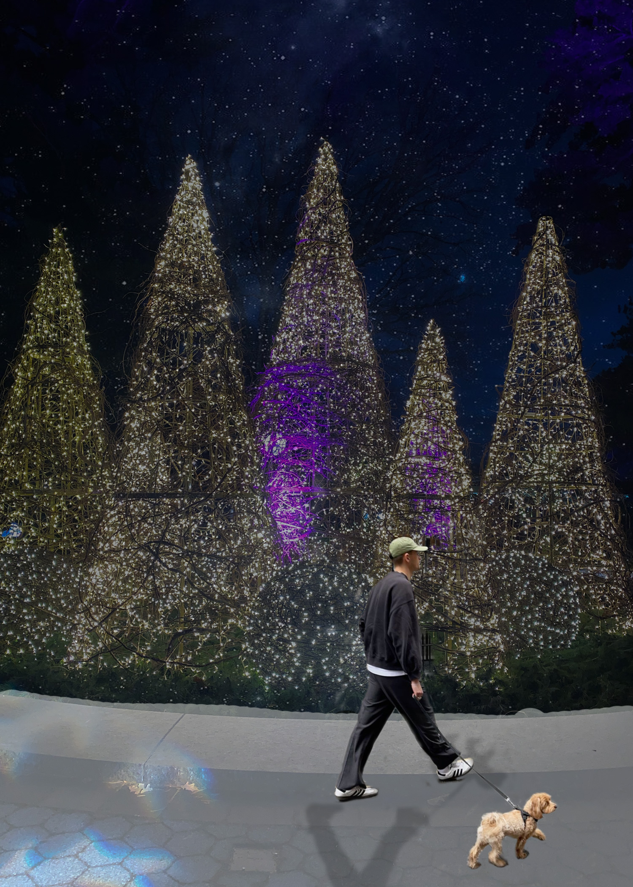
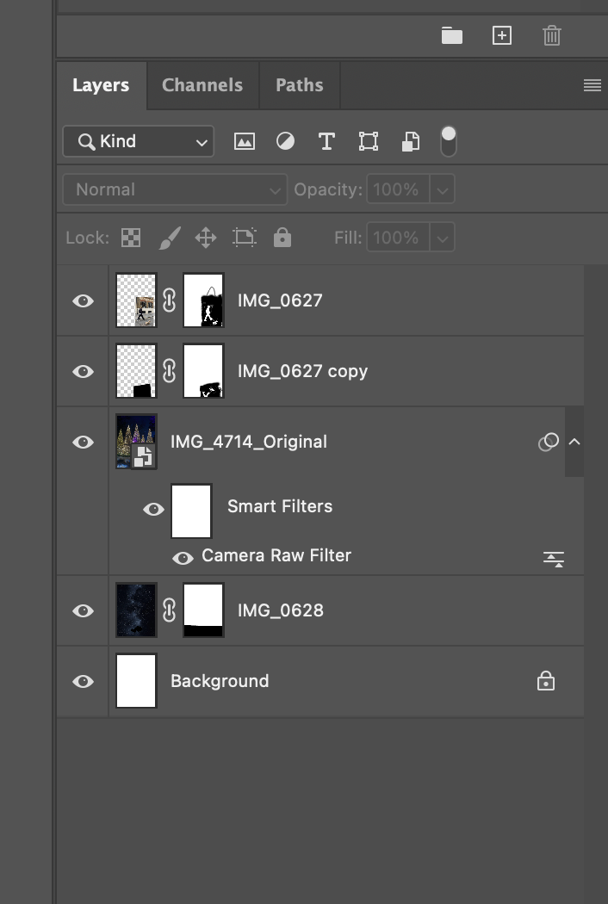

This photomontage explores a surreal environment by combining a street scene with a night sky filled with stars. I wanted to create a contrast between reality and imagination by placing ordinary elements like a person and a dog into an unrealistic setting. The goal was to make the viewer question what is real and what is constructed, similar to how images can reshape our perception of reality.
To create this piece, I used masking to remove backgrounds and blend different images together. I also used blending techniques to integrate the sky into the environment so it felt more natural. I worked non-destructively by using layer masks instead of erasing, which allowed me to refine edges and adjust elements without losing original data. The images used were a mix of my own photos and sourced visuals, combined to create a unified composition.
Back to Home